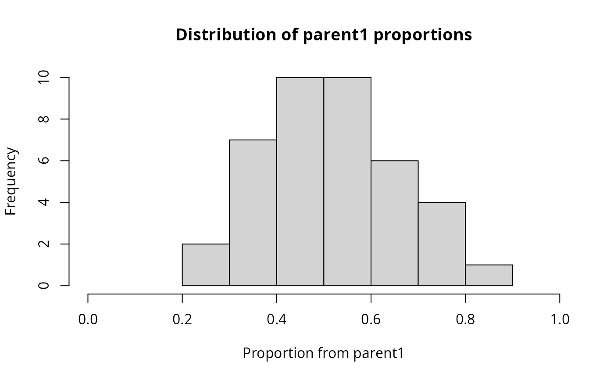

This function creates synthetic chimeric sequences by combining parts of
existing sequences from a phyloseq object. Useful for benchmarking chimera
detection methods like MiscMetabar::chimera_removal_vs() or
chimera_removal_dada2().
Usage
create_chimera_pq(
physeq,
n_chimeras = 5,
prop_mean = 0.5,
prop_sd = 0.15,
prop_min = 0.1,
seed = 123,
median_abundance_multiplier = 0.1,
min_parent_distance = 0.1
)Arguments
- physeq
(phyloseq, required) A phyloseq object with a refseq slot containing DNA sequences.
- n_chimeras
(integer, default: 5) Number of chimeric sequences to create.
- prop_mean
(numeric, default: 0.5) Mean of the normal distribution used to sample the proportion of the first parent sequence. A value of 0.5 means chimeras will be centered around 50/50 splits.
- prop_sd
(numeric, default: 0.15) Standard deviation of the normal distribution used to sample proportions. Higher values create more variable chimera breakpoints.
- prop_min
(numeric, default: 0.1) Minimum proportion threshold. Proportions below this value (or above 1 - prop_min) are resampled to ensure each parent contributes meaningfully to the chimera.
- seed
(integer, default: 123) Random seed for reproducibility.
- median_abundance_multiplier
(numeric, default: 0.1) Multiplier to set the abundance of chimeric sequences relative to the median abundance of existing sequences. A value of 0.1 means chimeras will have approximately 10% of the median abundance.
- min_parent_distance
(numeric, default: 0.1) Minimum sequence distance (proportion of differing positions) between parent1 and parent2. If 0, chimeras can be created from very similar parents, which may be harder to detect. In some cases, with min_parent_distance = 0, you may end up with chimeras that are identical to one of the parents.
Value
A list containing:
- physeq
The new phyloseq object with added chimeric sequences
- chimera_names
Character vector of chimera taxa names
- parent_info
Data frame with details about each chimera: chimera name, parent1, parent2, parent_distance, prop_parent1, breakpoint, seq_length
- params
List of parameters used (prop_mean, prop_sd, prop_min, min_parent_distance)
Examples
library(MiscMetabar)
data(data_fungi)
# Default: centered around 50% with some variation
result <- create_chimera_pq(data_fungi, n_chimeras = 40)
data_fungi_test <- result$physeq
known_chimeras <- result$chimera_names
# View the parent information and proportions
print(result$parent_info)
#> chimera parent1 parent2 parent_distance prop_parent1 breakpoint
#> 1 CHIMERA_1 ASV27 ASV33 0.5017 0.679 206
#> 2 CHIMERA_2 ASV22 ASV32 0.5082 0.686 209
#> 3 CHIMERA_3 ASV10 ASV27 0.5233 0.569 171
#> 4 CHIMERA_4 ASV10 ASV33 0.4800 0.754 226
#> 5 CHIMERA_5 ASV19 ASV7 0.5412 0.517 176
#> 6 CHIMERA_6 ASV13 ASV23 0.4502 0.768 223
#> 7 CHIMERA_7 ASV32 ASV8 0.5126 0.205 73
#> 8 CHIMERA_8 ASV23 ASV13 0.4502 0.429 125
#> 9 CHIMERA_9 ASV27 ASV22 0.5410 0.450 137
#> 10 CHIMERA_10 ASV19 ASV22 0.4984 0.487 149
#> 11 CHIMERA_11 ASV13 ASV12 0.4880 0.603 175
#> 12 CHIMERA_12 ASV10 ASV19 0.5167 0.456 137
#> 13 CHIMERA_13 ASV25 ASV32 0.5629 0.632 221
#> 14 CHIMERA_14 ASV12 ASV28 0.5364 0.384 127
#> 15 CHIMERA_15 ASV28 ASV12 0.5364 0.469 155
#> 16 CHIMERA_16 ASV13 ASV29 0.5223 0.360 105
#> 17 CHIMERA_17 ASV31 ASV29 0.5479 0.561 170
#> 18 CHIMERA_18 ASV25 ASV10 0.5400 0.302 91
#> 19 CHIMERA_19 ASV32 ASV26 0.5130 0.705 245
#> 20 CHIMERA_20 ASV7 ASV19 0.5412 0.727 247
#> 21 CHIMERA_21 ASV24 ASV27 0.5162 0.519 176
#> 22 CHIMERA_22 ASV7 ASV27 0.5333 0.557 192
#> 23 CHIMERA_23 ASV13 ASV7 0.4674 0.450 131
#> 24 CHIMERA_24 ASV27 ASV10 0.5233 0.546 164
#> 25 CHIMERA_25 ASV22 ASV32 0.5082 0.508 155
#> 26 CHIMERA_26 ASV6 ASV23 0.4252 0.808 243
#> 27 CHIMERA_27 ASV24 ASV27 0.5162 0.365 124
#> 28 CHIMERA_28 ASV26 ASV7 0.4524 0.397 138
#> 29 CHIMERA_29 ASV32 ASV27 0.4986 0.397 137
#> 30 CHIMERA_30 ASV23 ASV13 0.4502 0.479 139
#> 31 CHIMERA_31 ASV12 ASV27 0.4515 0.444 147
#> 32 CHIMERA_32 ASV13 ASV23 0.4502 0.406 118
#> 33 CHIMERA_33 ASV28 ASV23 0.5238 0.511 161
#> 34 CHIMERA_34 ASV26 ASV33 0.5512 0.406 123
#> 35 CHIMERA_35 ASV19 ASV13 0.5086 0.694 202
#> 36 CHIMERA_36 ASV25 ASV33 0.5446 0.546 165
#> 37 CHIMERA_37 ASV27 ASV13 0.4605 0.562 163
#> 38 CHIMERA_38 ASV18 ASV29 0.5050 0.676 205
#> 39 CHIMERA_39 ASV23 ASV29 0.5380 0.358 109
#> 40 CHIMERA_40 ASV7 ASV10 0.5467 0.250 75
#> seq_length
#> 1 303
#> 2 305
#> 3 300
#> 4 300
#> 5 340
#> 6 291
#> 7 357
#> 8 291
#> 9 305
#> 10 305
#> 11 291
#> 12 300
#> 13 350
#> 14 330
#> 15 330
#> 16 291
#> 17 303
#> 18 300
#> 19 347
#> 20 340
#> 21 339
#> 22 345
#> 23 291
#> 24 300
#> 25 305
#> 26 301
#> 27 339
#> 28 347
#> 29 345
#> 30 291
#> 31 330
#> 32 291
#> 33 315
#> 34 303
#> 35 291
#> 36 303
#> 37 291
#> 38 303
#> 39 303
#> 40 300
# More variable proportions (wider distribution)
result2 <- create_chimera_pq(data_fungi, n_chimeras = 40,
prop_mean = 0.5, prop_sd = 0.25)
# Biased toward more of parent1 (e.g., 70/30 splits on average)
result3 <- create_chimera_pq(data_fungi, n_chimeras = 40,
prop_mean = 0.7, prop_sd = 0.1)
# Benchmark chimera detection methods
if (MiscMetabar::is_vsearch_installed()) {
nochim_vs <- MiscMetabar::chimera_removal_vs(data_fungi_test)
detected_vs <- known_chimeras[!known_chimeras %in% phyloseq::taxa_names(nochim_vs)]
cat("vsearch detected:", length(detected_vs), "/",
length(known_chimeras), "chimeras\n")
}
#> Filtering for sequences under 100 bp remove a total of 0 ( 0 %) unique sequences for a total of 0 sequences removed ( 0 %)
#> Cleaning suppress 0 taxa ( ) and 0 sample(s) ( ).
#> Number of non-matching ASV 0
#> Number of matching ASV 1460
#> Number of filtered-out ASV 279
#> Number of kept ASV 1181
#> Number of kept samples 185
#> vsearch detected: 39 / 40 chimeras
# Visualize the distribution of proportions
hist(result$parent_info$prop_parent1,
main = "Distribution of parent1 proportions",
xlab = "Proportion from parent1", xlim = c(0, 1))

# Ensure parents are at least 15% different (more detectable chimeras)
result4 <- create_chimera_pq(data_fungi, n_chimeras = 40,
min_parent_distance = 0.15)
# Disable parent distance filtering (allows similar parents)
result5 <- create_chimera_pq(data_fungi, n_chimeras = 40,
min_parent_distance = 0)